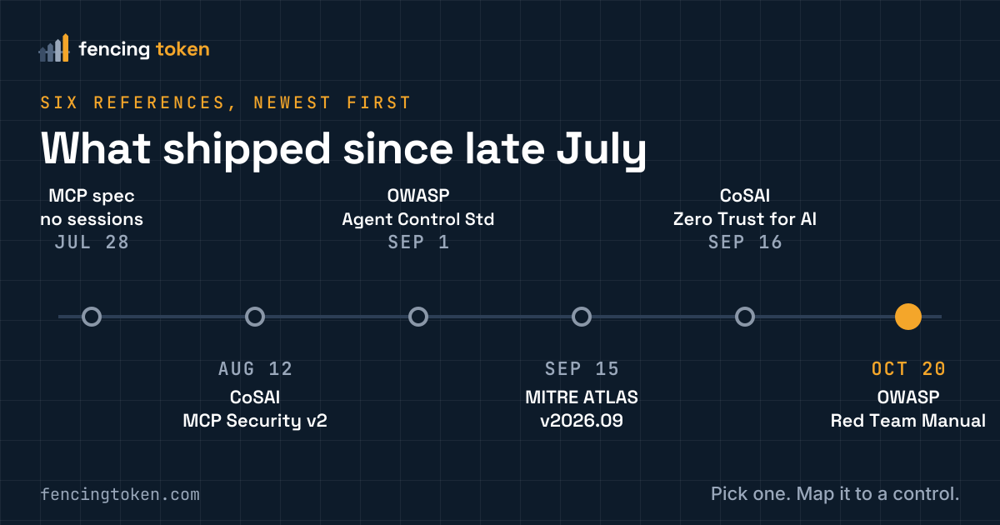

Issues · · DESIGN-REVIEW REFERENCES
Six free agent-security references for your next design review
New specs and references from OWASP, CoSAI, MITRE ATLAS, and the MCP project, each mapped to a question you can ask in a review.

Sources
An eight-phase method, from planning to remediation, that covers agents. genai.owasp.org
Authorization can't be delegated to the model; bind sessions to the user and issue short-lived, scoped tokens. coalitionforsecureai.org
New agent techniques, such as probing trigger channels and discovering runtime capabilities. github.com
Runtime hooks and portable policy across agent frameworks. Early stage (v0.1). genai.owasp.org
Four assurance levels across eight security dimensions. coalitionforsecureai.org
- StandardMCP spec, 2026-07-28 revision
Removes protocol-level sessions; clients must validate the issuer in authorization responses when present. modelcontextprotocol.io
Part of the Fencing Token roadmap. Found an error? Open an issue.